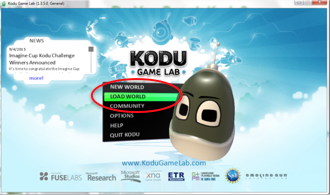
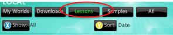

Extend Yourself - Kodu: Terrain Area
 Improve Your Game
Improve Your Game
Can you think of ways to make your game better? Add objects and programming rules to improve your game. Use your imagination and experiment with different options. The Kodu website has many resources to get you started.
Explore Lesson Worlds
More Lesson Worlds give you step-by-step directions. From the Home Menu, click Load World and select All.
Here are some great Lesson Worlds to explore:
- First Tutorial
- Programming Kodu
- Score Tutorial
- Technique Eat Certain Apples
- Technique Gather Apples
- Tutorial 1 v06 Move Kodu to Castle
 
Find the Area of Your World
As you create a game in Kodu, you will be able to create different lands. You can find the area of your whole world by adding the areas of each land in your world together. Remember to first find the area of each land by using tiling or multiplication.
Create a Map
Create a map of your neighborhood or town. Sketch out your map. Be sure to add important places, roads, rivers/lakes, and paths. If you need help getting started, use Google Maps to search for a map of your neighborhood or town. After you sketch your town, create a grid so you can calculate the area by tiling or use the multiplication formula to find the area.